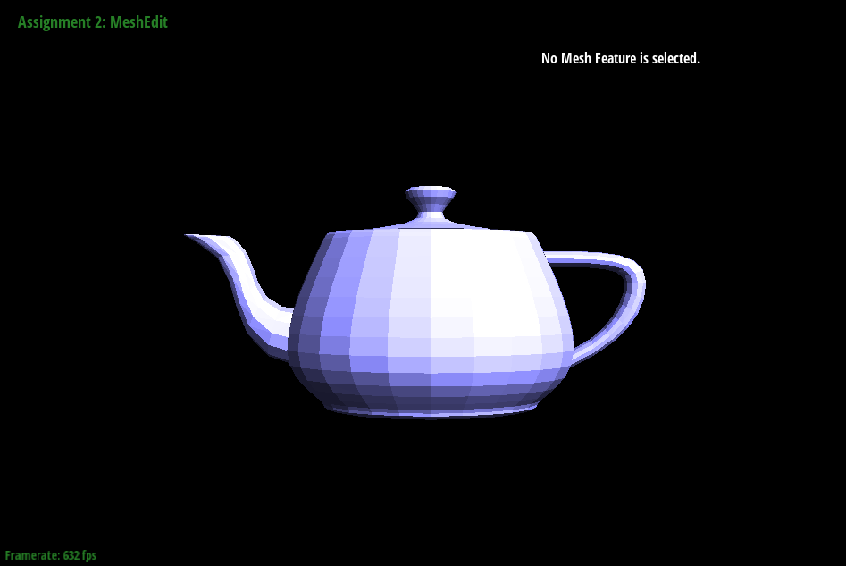
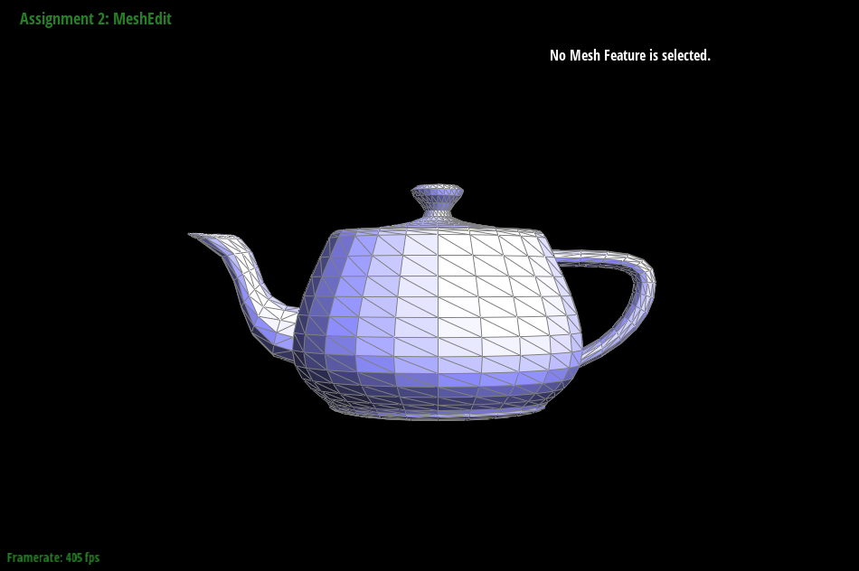

Link to webpage: Webpage
Link to GitHub repository: GitHub repoHello (part 2)!
Overview
This homework made me sad :(
Section I: Bezier Curves and Surfaces
Part 1: Bezier curves with 1D de Casteljau subdivision
Given a vector of control points we iterate and use linear interpolation to create a new set of intermediate points to create the Bezier Curve.
zero calls to BezierCurve::evaluateStep(...)
one call to BezierCurve::evaluateStep(...)
two calls to BezierCurve::evaluateStep(...)
three calls to BezierCurve::evaluateStep(...)
four calls to BezierCurve::evaluateStep(...)
five calls to BezierCurve::evaluateStep(...)
moved original control points and modified parameter t
Part 2: Bezier surfaces with separable 1D de Casteljau
The de Casteljau algorithm extends to Bezier surfaces by applying it recursively in two directions (u and v). In my implementation evaluateStep performs a single step of the de Casteljau algorithm, evaluate1D fully evaluates a Bezier curve using the de Casteljau algorithm, and finally evaluate extends this to a Bezier surface by applying evaluate1D first along u and then along v.
bez/teapot.bez
Section II: Triangle Meshes and Half-Edge Data Structure
Part 3: Area-weighted vertex normals
Here we iterate through each half-edge we calculate the normal of the face as the cross product of two edges of the triangle and weigh this vector by multiplying by area. Summing all of this over all half-edges and normalizing for final result.

Default flat shading
Phong shading
Part 4: Edge flip
For this question I collected all neighboring half-edges, vertices, edges, and faces for use in setNeighbors, where I assign the new neighbors for the new flipped-half-edges and after that all of these collected elements are repointed to their new flipped half-edge.

Before flipping
After flipping
Part 5: Edge split
Similarly to the previous problem we collect neighboring halfedges, vertices, edges, and faces, however this time we create a new vertex and new half edges, edges and faces as well in order to create the 4 triangle split. After their creation we update the pointers with existing neighbors and we return the iterator to the vertex.
Before splitting
After splitting
Before splitting + flipping
After splitting + flipping
Part 6: Loop subdivision for mesh upsampling
I tried to update vertex positions before performing 4-1 subdivisions over the entire mesh. However I believe that my implementation for this function is wrong. After loop subdivision my mesh appears to crumple up. The write up spec mentions that after performing loop subdivision on cube.dae it should grow unsymmetric. I cannot confirm this with my implementation but I believe that pre-processing the mesh by flipping edges along one half of the cube would help to make loop subdivision symmetric